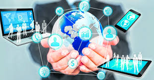

bibliografia
La tecnología ha tenido un profundo impacto en la sociedad. Por una parte, la tecnología ha generado mejoras significativas en la atención médica, el transporte, la comunicación y otras áreas. Los avances en la tecnología médica han llevado a una mayor esperanza de vida y una mejor calidad de esta para muchas personas.

>
En el transporte ha facilitado la movilidad de las personas, bienes y servicios en todo el mundo. En el área de la comunicación ha hecho posible que las personas se conecten a pesar de las grandes distancias y ha facilitado el intercambio de información y conocimientos. Por otro lado, el desarrollo de nuevas tecnologías ha provocado la pérdida y el desplazamiento de puestos de trabajo, ya que las máquinas y la automatización han reemplazado la mano de obra humana en muchas industrias.
El uso de la tecnología también ha llevado al aislamiento social y a una disminución de la interacción cara a cara. Como consecuencia de esto las empresas deben de estar a la vanguardia del cambio tecnológico.
La aceleración del cambio tecnológico
El cambio tecnológico se ha acelerado a un ritmo sin precedentes en los últimos años. El auge de la inteligencia artificial, el aprendizaje automático y otras tecnologías avanzadas han provocado cambios significativos en la forma en que vivimos nuestras vidas. Estas tecnologías tienen el potencial de revolucionar las industrias y crear nuevas oportunidades de crecimiento e innovación.
Gestión del cambio tecnológico
A medida que el cambio tecnológico sigue acelerándose, es importante gestionarlo de manera que beneficie a nuestra sociedad, con el objetivo de mejorar la productividad y la atención brindada a los clientes.
Beneficios del cambio tecnológico
Son numerosas las ventajas de los cambios tecnológicos para la humanidad. Éstas son algunas de ellas:
Aumento en la eficiencia y en la productividadOpción de trabajo remotoConectividad entre personas sin importar su ubicaciónAprendizaje continuoMayor acceso a la información.
Tecnologías disponibles en la actualidad
Son muchos los dispositivos tecnológicos importantes que han surgido en los últimos años, pero estos son algunos de los más significativos.
Teléfonos inteligentes
Los teléfonos inteligentes son más importantes que nunca, ya que se están convirtiendo cada vez más en la forma principal en que las personas acceden a Internet y se mantienen conectadas entre sí. Con la continua evolución de la tecnología móvil, los teléfonos inteligentes ofrecen una variedad de capacidades que antes solo estaban disponibles en las computadoras de escritorio.
Computadoras personales
Aunque los teléfonos inteligentes han ganado una participación de mercado significativa, las computadoras personales siguen siendo dispositivos tecnológicos cruciales, especialmente para fines comerciales y de productividad.
Auriculares de realidad virtual
Los auriculares de realidad virtual se están volviendo cada vez más populares y ofrecen experiencias de juego y entretenimiento inmersivas que antes se creían imposibles. Con el continuo desarrollo de la tecnología de realidad virtual, estos auriculares están destinados a ser aún más importantes en los próximos años.
Dispositivos de Internet de las cosas (IoT)
Los dispositivos de IoT se están volviendo más comunes tanto en los hogares como en las empresas, ya que ofrecen una amplia gama de beneficios, que incluyen una mayor eficiencia y comodidad. Los termostatos inteligentes, las luces inteligentes y otros dispositivos IoT son cada vez más sofisticados y se espera que su uso crezca rápidamente en los próximos años.
Redes 5G
Se espera que el despliegue de redes 5G tenga un gran impacto en la tecnología en los próximos años, ya que ofrece velocidades de carga y descarga más rápidas, conectividad más confiable y la capacidad de admitir una amplia gama de nuevas aplicaciones y servicios.